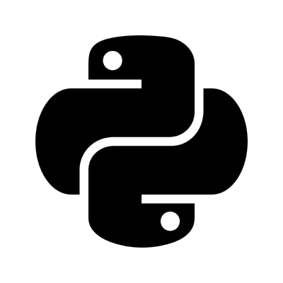
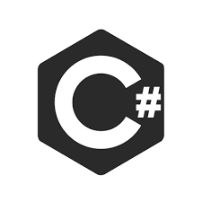
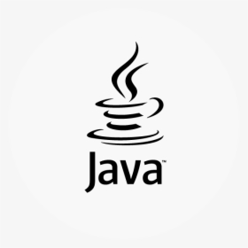

© 2021 This site
Created by KS
Created by KS
News
Latest News

Javascript
JavaScript – internet səhifələrin yaradılmasında geniş istifadə olunan proqramlaşdırma dilidir. JavaScript müxtəlif dilllərdən ilhamlanaraq yaradılmışdır. 1995-ci ilə Brendan Eyx tərəfindən yazılmışdır. JavaScript Obyekt Yönümlü Proqramlaşdırma (OYP) dilidir.

Python
Python dili - interpretasiya olunan, yüksək səviyyəli və ümumi-məqsədli proqramlaşdırma dilidir. 1991-ci ildə Guido van Rossum tərəfindən yaradılmışdır.sBu dilin məqsədi onun dil quruluşu və obyekt-yönümlülüyü ilə proqramçılara xırda və iri həcimli layihələrdə aydın, məntiqli kod yazmağa kömək etməkdir.

C#
C#(C Sharp) – Microsoft.Net platformu ilə birlikdə təqdim olunan C ailəsinə aid yeni obyekt orientasıyalı dillərdən biri. Sintaksis və platform olaraq ən çox Javaya yaxındır. Javadakı bir çox xüsusiyyət – sadəlik, tullantı avtomatik təmizləmə mexanizmi, virtual maşın (CLR) – bu dildə də mövcuddur.Obyektyönümlü proqramlaşdırma dilidir.

Java